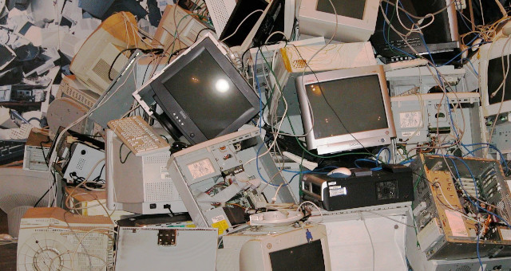

Resíduo Eletrônico: O que é?
19/abril/2023
O termo "resíduo eletrônico", também conhecido como lixo eletrônico ou e-lixo, refere-se aos equipamentos eletrônicos descartados ou obsoletos que contêm componentes tóxicos e metais pesados, como mercúrio, chumbo e cádmio. Esses equipamentos incluem computadores, laptops, telefones celulares, tablets, impressoras, aparelhos de TV e outros dispositivos eletrônicos.O descarte inadequado desses resíduos pode causar sérios danos ao meio ambiente e à saúde humana, tornando a gestão responsável e segura do resíduo eletrônico uma preocupação crescente em todo o mundo. É importante destacar que esses resíduos possuem potencial para a reciclagem de seus materiais e elementos, evitando o desperdício e prejuízos ambientais.
Impactos ambientais
Alguns dos impactos ambientais causados pelos residuo eletronico são :
Poluição do solo: Os resíduos eletrônicos contêm uma série de substâncias tóxicas, como mercúrio, chumbo, cádmio e bromo, que podem contaminar o solo e afetar a qualidade do solo. Essas substâncias tóxicas também podem se infiltrar nas águas subterrâneas e poluir os recursos hídricos.
Poluição do ar: O descarte inadequado de resíduos eletrônicos também pode levar à emissão de gases tóxicos na atmosfera, o que pode levar à poluição do ar. Isso pode ter efeitos negativos na saúde humana, incluindo doenças respiratórias, como a asma.
Destruição da fauna e da flora: Os resíduos eletrônicos que não são descartados corretamente podem ser ingeridos por animais e causar danos ao sistema digestivo. Além disso, os metais pesados e outras substâncias tóxicas presentes nesses resíduos podem ter efeitos negativos sobre a flora e a fauna locais.
Desperdício de recursos: A produção de dispositivos eletrônicos requer a utilização de recursos naturais valiosos, como metais e minerais. Quando esses dispositivos são descartados prematuramente, esses recursos são perdidos e precisam ser extraídos novamente, o que pode levar a um impacto ambiental adicional.
Portanto, é importante que os resíduos eletrônicos sejam descartados adequadamente e que sejam implementadas políticas de reciclagem e reutilização desses materiais, a fim de reduzir seu impacto ambiental.
Como descartar os resíduos eletrônicos de forma adequada?
Aqui estão algumas maneiras de descartar os resíduos eletrônicos de forma adequada:
- Doação: Se o dispositivo eletrônico ainda estiver funcionando e em bom estado, pode ser doado para uma instituição de caridade, escola ou para alguém que precise dele.
- Reciclagem: Os resíduos eletrônicos podem ser reciclados para recuperar materiais valiosos, como metais e plásticos. Procure uma empresa especializada em reciclagem de eletrônicos, ou verifique se há programas de reciclagem em sua região.
- Ponto de coleta : Muitas cidades possuem pontos de coleta de resíduos eletrônicos, onde você pode deixar seus dispositivos para serem reciclados ou descartados de forma segura. Verifique com a prefeitura de sua cidade para descobrir onde esses pontos de coleta estão localizados.
- Devolução ao fabricante: Algumas empresas oferecem programas de reciclagem de eletrônicos, permitindo que você devolva seus dispositivos antigos para serem reciclados de forma segura. Entre em contato com o fabricante para verificar se essa opção está disponível.
É importante lembrar que você nunca deve descartar resíduos eletrônicos em lixo comum ou em aterros sanitários, pois isso pode causar poluição ambiental e degradação da qualidade do solo e da água. Certifique-se de descartar seus resíduos eletrônicos de forma adequada e responsável.